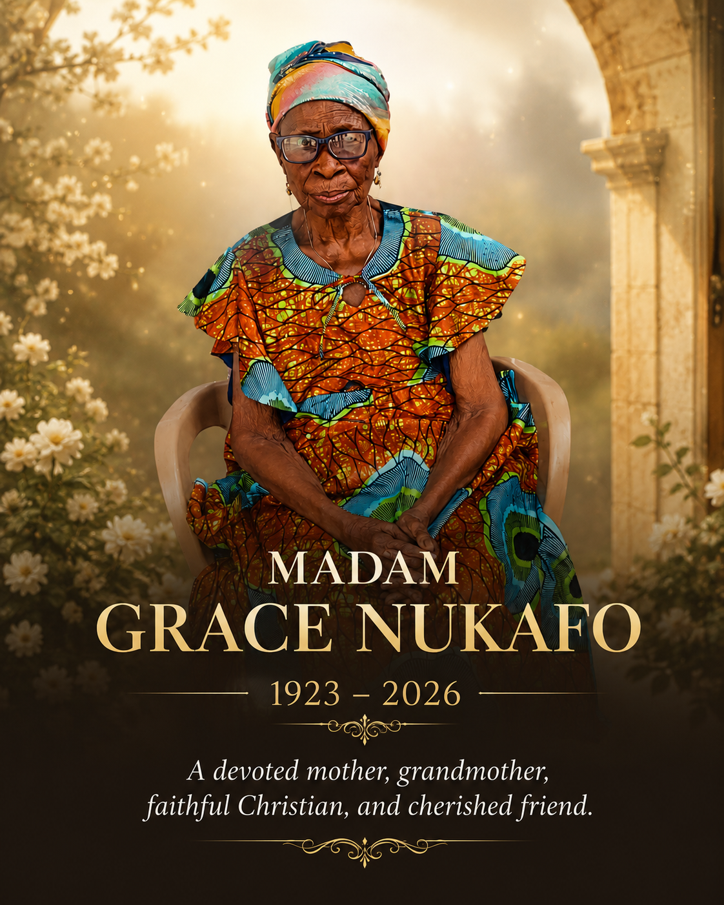

Tributes

IN LOVING MEMORY OF MADAM GRACE NUKAFU It is with deep sorrow, yet with grateful hearts, that the brethren of the Nsawam Road Church of Christ pay tribute to our beloved sister, Madam Grace Nukafu, affectionately called “Old Lady,” whose faithful Christian life has left an enduring legacy among us. Madam Grace was baptized into the Lord’s church on 12th January 1992 and became a devoted member of the Kokomlemle Zone due to her residence at Kokomlemle. From the late 1990s, she stood as a strong pillar within the zone, demonstrating unwavering commitment to the fellowship of the saints. At a time when many found it difficult to return for the 6:00 PM zonal meetings after Sunday worship, Madam Grace remained constant, punctual, and dependable. Her dedication to the work of the church was exceptional and inspiring to all who knew her. She never hesitated to support the activities of the zone financially, always contributing cheerfully her “widow’s mite” whenever the need arose. Madam Grace was also a fervent woman of prayer. During prayer sessions, she continually lifted her family before God, especially holding firmly to the hope and prayer that the Lord would one day safely return her son who had lived for many years in South Africa. Her faith in God’s power and mercy never wavered. She remained active and devoted in the Kokomlemle Zone until late 2009, when advancing age and physical weakness made it unsafe for her to cross the busy roads between her home and the church premises. Out of concern for her safety, she was advised to remain at home, while the zone committed itself to visiting and caring for her spiritually. For the past sixteen years, Madam Grace faithfully remained a dedicated shut-in member of the church, receiving the Lord’s Supper every Sunday in her home. Even in her advanced years, her love for God’s Word never diminished. Any brother assigned to serve communion to her knew they had to come prepared to share the sermon for the day. If one attempted to leave without recounting the message, she would quickly ask in Twi, “Na ɛdeɛn na ɔsɔfoɔ kaaɛ?” meaning, “What did the preacher say?” Such was her hunger for the Word of God. Indeed, we have lost a beautiful and faithful soul whose Christian example will continue to inspire generations. Though our hearts are heavy with grief, we take comfort in knowing that Madam Grace lived a life devoted to God and His church. Old Lady, your faithfulness, prayers, kindness, and steadfastness will forever remain in our hearts. We shall deeply miss your presence, your words of encouragement, and your unwavering devotion to the Lord. May you rest peacefully in the bosom of your Maker until that glorious resurrection morning. “Blessed are the dead who die in the Lord… they will rest from their labor, for their deeds will follow them.” — Revelation 14:13 Farewell, dear sister. Farewell, faithful servant of God.
TRIBUTE BY CHILDREN 1923 – 2026 Mother, You taught us that love is served on a plate. Every person who crossed our doorstep was met with your voice asking, “Have you eaten?” and you did not rest until there was food in their hands. You fed strangers like family, and you fed your grandchildren until we couldn’t eat another bite. You lived sacrificially. You gave of yourself daily. Your comfort came last, your children came first. Your kitchen was your altar, your cooking was your prayer, and your care carried our whole family. You were not just our mother. You were “Mother” to everyone. We watched you pour yourself out without counting the cost. You spent your strength, your time, and your life making sure none of us went hungry, none of us felt unseen. Because of you, our home was always full – full of food, full of laughter, full of love. We mourn you deeply, but we thank God for the gift of you. We promise to live the way you taught us, to give, to serve and to ask, “Have you eaten?” to the next person who needs care. Your work here is done, and your children will carry it forward. Sleep well, Mother.
A TRIBUTE TO OUR BELOVED DADA Dada, Our hearts are heavy with tears, but we are grateful for the life and love you gave us. You were more than our grandmother. You were our Mama Nana, our Dada, our safe place. The one whose lap we ran to when life felt heavy, whose Ewe folktales under the moonlight taught us who we are and where we come from. You taught us to say “Mèlõ na wò” — I love you — not just with words, but with every meal you cooked, every prayer you whispered for us at dawn. We remember wrapped in your care, how you sang old Ewe dirges and gospel songs while you went about your day and how your voice and presence always made the compound feel alive. You corrected us when we went wrong, but it was always because, “if you were not important to me, I wouldn’t bother guiding you.” Your hands were rough from work, but they never grew tired of blessing us. Now the house is quiet. No more hearing you call “Mi va du nu!” — Come and eat! No more hearing your laughter and trying to call us by our English names. But Dada, we know the one who dies is not truly gone. You live in us. In the respect we show, the hard work we do, the faith we keep, and the love we have for each other. We promise to keep your name alive. To care for one another as you cared for us. So we say... Sleep well, our sweet grandmother. May you rest in the arms of Mawu, the Almighty. We miss you more than words can say, but we thank God for giving you to us. Forever your grandchildren and great-grandchildren.